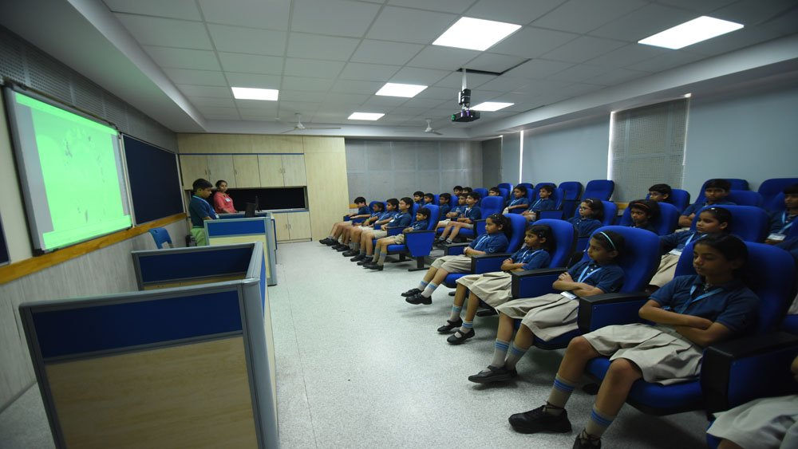

Pre Primary
The child centred curriculum in our Pre-primary (early years) program is in accordance with the Playway and Montessori methods blended with activity-based teaching as advocated by Jean Piaget, John Dewey, Friedrich Frobel and the Reggio Emilia approach. The curriculum is designed to cater to the individual interests and potential of children and to enhance the social, creative and cognitive skills and address their emotional quotient so that the children are happy and engaged at school.
Primary

We, at the Primary Wing of The Khaitan School, believe that the mind, like a parachute, works best when opened. Keeping this initiative in mind, the scholastic and co-scholastic aspects of the curriculum and the evaluation procedure are developed for building the students’ knowledge, potential & talent, to the optimum level. Smart boards in all sections of the primary wing facilitate world-class audio-visual learning which engages students and enables better comprehension. Scientific temperament is inculcated through lab experiments, exhibitions, model making, collage making, nature walk, many multi-skilled activities and interdisciplinary projects.
Middle and Senior

We, at the Primary Wing of The Khaitan School, believe that the mind, like a parachute, works best when opened. Keeping this initiative in mind, the scholastic and co-scholastic aspects of the curriculum and the evaluation procedure are developed for building the students’ knowledge, potential & talent, to the optimum level. Smart boards in all sections of the primary wing facilitate world-class audio-visual learning which engages students and enables better comprehension. Scientific temperament is inculcated through lab experiments, exhibitions, model making, collage making, nature walk, many multi-skilled activities and interdisciplinary projects.
Clubs

Structured HUNAR classes are held to expose students to pursue their hobbies and interests. Students participate actively in any one of the following clubs under the guidance of their respective teachers, coaches and professionals.